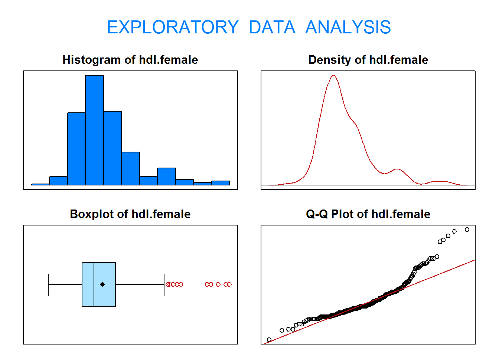
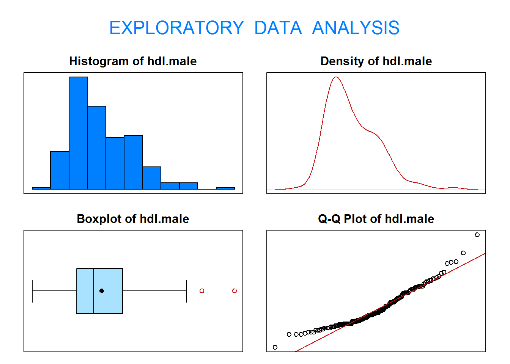
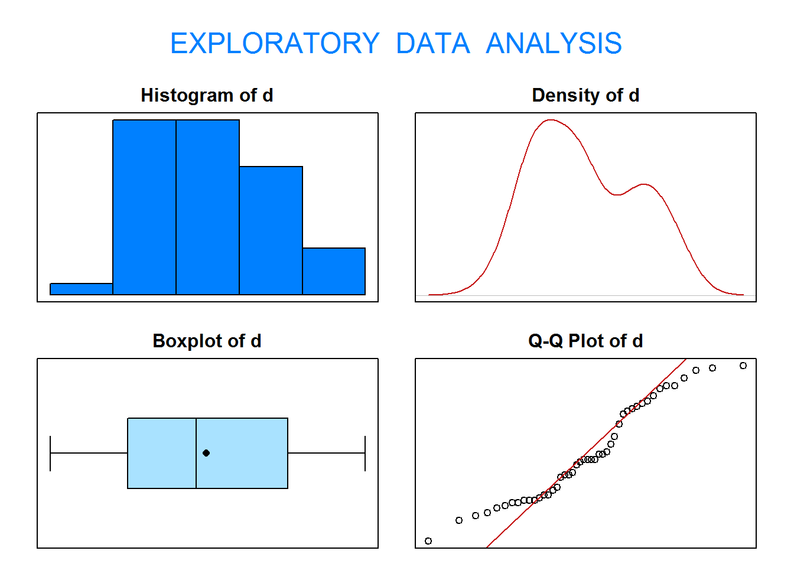
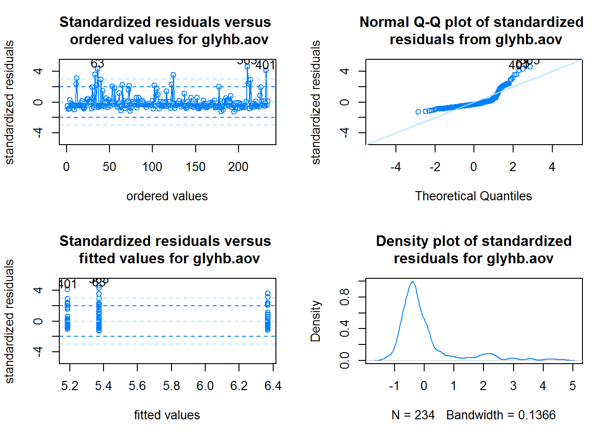

En esta práctica vamos a trabajar con el fichero de datos diabetes.
El fichero de datos contiene 19 variables medidas sobre 403 pacientes. Estos pacientes forman parte de un estudio con 1046 sujetos diseñado para investigar la prevalencia de la de obesidad, diabetes, y otros factores de riesgo cardiovasculares para Afroamericanos en Virginia, EEUU.
Según Dr John Hong, Diabetes Mellitus Tipo II está asociada con la obesidad. El índice cintura-cadera puede ser un predictor en diabetes y enfermedades de corazón.
Diabetes Mellitus Tipo II está también asociada con hipertensión y ambos pueden ser parte del “Síndrome X”.
Los 403 sujetos del estudio son aquellos a los que se les hizo un seguimiento de diabetes. La hemoglobina glicosilada >7.0 se toma normalmente como diagnóstico positivo de diabetes.
Para más información ver el paper: Willems JP, Saunders JT, DE Hunt, JB Schorling. Prevalence of coronary heart disease risk factors among rural blacks: A community-based study. Southern Medical Journal 90: 814-820; 1997. https://europepmc.org/abstract/med/9258308
Estas son las variables que contiene el fichero (se han eliminado alguna del fichero original y se han reemplazado algunos valores perdidos):
Variable
Descripción
id
Subject ID
chol
Total Cholesterol (mg/dL)
stab.glu
Stabilized Glucose (mg/dL)
hdl
High Density Lipoprotein (mg/dL)
ratio
Cholesterol/HDL Ratio
glyhb
Glycosolated Hemoglobin (%)
location
Buckingham or Louisa
age
Age of patient (years)
gender
Male or Female
height
Height (inches)
weight
Weight (pounds)
frame
Body frame size (small, medium, large)
bp.1s
First Systolic Blood Pressure (mmHg)
bp.1d
First Diastolic Blood Pressure (mmHg)
waist
Waistline (inches)
hip
Hip measurement (inches)
En primer lugar, debemos leer el fichero diabetes en R:
id chol stab.glu hdl ratio glyhb location age gender height weight frame
1 1000 203 82 56 3.6 4.31 Buckingham 46 female 62 121 medium
2 1001 165 97 24 6.9 4.44 Buckingham 29 female 64 218 large
3 1002 228 92 37 6.2 4.64 Buckingham 58 female 61 256 large
4 1003 78 93 12 6.5 4.63 Buckingham 67 male 67 119 large
5 1005 249 90 28 8.9 7.72 Buckingham 64 male 68 183 medium
6 1008 248 94 69 3.6 4.81 Buckingham 34 male 71 190 large
bp.1s bp.1d waist hip
1 118 59 29 38
2 112 68 46 48
3 190 92 49 57
4 110 50 33 38
5 138 80 44 41
6 132 86 36 42
1. Pruebas no-paramétricas
1.1. ¿Puede asumirse que la variable hdl en mujeres sigue una distribución normal? Contrasta al nivel de significación \(\alpha=0.05\) si la mediana de la variable hdl en mujeres es superior a 47.
library(PASWR2)## Seleccionamos los datos requeridos ##pos <-which(diabetes$gender=="female")hdl.female <- diabetes$hdl[pos]## Comprobamos la condición de normalidad ##eda(hdl.female)

Size (n) Missing Minimum 1st Qu Mean Median TrMean 3rd Qu
234.000 0.000 14.000 41.000 52.111 47.500 50.825 59.000
Max Stdev Var SE Mean I.Q.R. Range Kurtosis Skewness
120.000 17.255 297.739 1.128 18.000 106.000 2.443 1.390
SW p-val
0.000
Wilcoxon signed rank test with continuity correction
data: hdl.female
V = 16282, p-value = 0.001492
alternative hypothesis: true location is greater than 47
1.2. Contrasta al nivel de significación \(\alpha=0.05\) si existen diferencias entre los niveles de hdl en hombres y en mujeres. Comprueba si puede asumirse normalidad y realiza el contraste adecuado.
pos1 <-which(diabetes$gender=="male")hdl.male <- diabetes$hdl[pos1]pos2 <-which(diabetes$gender=="female")hdl.female <- diabetes$hdl[pos2]# Comprobamos la condición de normalidadeda(hdl.male)

Size (n) Missing Minimum 1st Qu Mean Median TrMean 3rd Qu
169.000 0.000 12.000 35.000 48.139 44.000 47.173 59.000
Max Stdev Var SE Mean I.Q.R. Range Kurtosis Skewness
117.000 17.004 289.141 1.308 24.000 105.000 1.001 0.934
SW p-val
0.000
eda(hdl.female)
Size (n) Missing Minimum 1st Qu Mean Median TrMean 3rd Qu
234.000 0.000 14.000 41.000 52.111 47.500 50.825 59.000
Max Stdev Var SE Mean I.Q.R. Range Kurtosis Skewness
120.000 17.255 297.739 1.128 18.000 106.000 2.443 1.390
SW p-val
0.000
Wilcoxon rank sum test with continuity correction
data: hdl.male and hdl.female
W = 16630, p-value = 0.006439
alternative hypothesis: true location shift is not equal to 0
1.3. Considera el fichero PHENYL de la libreria PASWR2. Contrasta al nivel de significación \(\alpha=0.05\) si existen diferencias en los niveles medios de la coenzima Q10 en el momento de comenzar el estudio (variable Q10.1) y al finalizar el estudio (variable Q10.4).
Warning in wilcox.test.default(PHENYL$Q10.4, PHENYL$Q10.1, mu = 0, paired =
TRUE, : cannot compute exact p-value with ties
Wilcoxon signed rank test with continuity correction
data: PHENYL$Q10.4 and PHENYL$Q10.1
V = 223.5, p-value = 0.0005439
alternative hypothesis: true location shift is not equal to 0
1.4 Considera el fichero diabetes. Crea otro fichero llamado diabetes.mujeres que contenga únicamente a las mujeres de la muestra.
Contrasta al nivel de significación \(\alpha=0.05\) si existen diferencias entre los niveles medios de glucosa glicosilada (glyhb) según la constitución del cuerpo (frame) entre las mujeres.
## Análisis exploratorio de los datos ##boxplot(glyhb ~ frame, data=diabetes)

## Análisis de la varianza con la función aov() ##glyhb.aov <-aov(glyhb~frame, data=diabetes.female)summary(glyhb.aov)
Df Sum Sq Mean Sq F value Pr(>F)
frame 2 40.4 20.207 4.7 0.00998 **
Residuals 231 993.1 4.299
---
Signif. codes: 0 '***' 0.001 '**' 0.01 '*' 0.05 '.' 0.1 ' ' 1
## Comprobamos las hipótesis del modelo ##checking.plots(glyhb.aov)

r <-rstandard(glyhb.aov)shapiro.test(r) ## Normalidad de los errores
Shapiro-Wilk normality test
data: r
W = 0.7235, p-value < 2.2e-16
library(car)leveneTest(glyhb.aov) ## Test de Levene para homogeneidad de varianzas
Levene's Test for Homogeneity of Variance (center = median)
Df F value Pr(>F)
group 2 1.0362 0.3564
231
## Como no se cumplen las hipótesis del modelo, realizamos el test de Kruskal-Walliskruskal.test(glyhb~frame, data=diabetes.female)
Kruskal-Wallis rank sum test
data: glyhb by frame
Kruskal-Wallis chi-squared = 20.111, df = 2, p-value = 4.295e-05
Si has detectado diferencias, averigua entre qué grupos existen diferencias estadísticamente significativas.
Study: diabetes.female$glyhb ~ diabetes.female$frame
Kruskal-Wallis test's
Ties or no Ties
Critical Value: 20.11077
Degrees of freedom: 2
Pvalue Chisq : 4.295381e-05
diabetes.female$frame, means of the ranks
diabetes.female.glyhb r
large 157.07143 42
medium 114.76423 123
small 98.28986 69
Post Hoc Analysis
Comparison between treatments mean of the ranks.
Difference pvalue Signif. LCL UCL
large - medium 42.30720 0.0003 *** 19.424803 65.18960
large - small 58.78157 0.0000 *** 33.723420 83.83973
medium - small 16.47437 0.0932 . -2.783587 35.73233